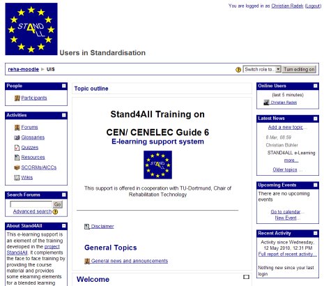

E-learning Content and Facilities
The course “Users in Standardisation”, which the Stand4All project developed for its training sessions, has been integrated into a learning management system or course management system. This means that the content of the presentations and the accompanying documents are available in a web-based form that trainees can review at their own pace, for example, before or after attending a live training session. The only requirements are a Web browser and a PDF reader. The content available in the learning management system does not cover the complete training course, because group discussions and the role-play activity cannot be turned into a format for individual learning.
The e-learning approach used by Stand4All is asynchronous: students and trainers do not need to be present at the same time. However, the platform allows trainees to communicate with other trainees and with trainers, so it also serves as a trainee network. This network also allows trainees to get to know each other before attending a live training session. The e-learning module is meant to be used in conjunction with a “live” training session in a blended-learning setup, rather than as an pure online learning experience.
Accessing the E-Learning Module
The content is available as an e-learning module in Moodle (see below). The course is intended for organisations that represent elderly persons and/or persons with disabilities, and for members of standardisation committees who want to address accessibility in standards and technical specifications. The course materials are also meant to be used by national standardisation bodies. User organisations and standardisation bodies who want to access the course should contact Stand4All co-ordinator Ms Charlotte Mosies (NEN, the Dutch Standardisation Institute) at charlotte.mosies@nen.nl.
What Is E-learning?
Wikipedia defines e-learning as “all forms of electronic supported learning and teaching, which are procedural in character and aim to effect the construction of knowledge with reference to individual experience, practice and knowledge of the learner. (…) E-learning is essentially the computer and network enabled transfer of skills and knowledge. E-learning refers to using electronic applications and processes to learn. E-learning applications and processes include Web-based learning, computer-based learning, virtual classrooms and digital collaboration. Content is delivered via the Internet, intranet/extranet, audio or video tape, satellite TV, and CD-ROM. It can be self paced or instructor led and includes media in the form of text, image, animation, streaming video and audio.”
E-learning is often delivered through a learning management system or LMS. Wikipedia defines a learning management system as “a software application for the administration, documentation, tracking, and reporting of training programs, classroom and online events, e-learning programs, and training content” (definition from “Field Guide to Learning Management Systems”, by Ryann K. Ellis, 2009).
What Is Moodle?
Moodle is a free and open-source learning management system that is used in primary schools as well as higher education. It can be used both for fully online courses and to augment face-to-face courses (“blended learning”). It can also support collaborative communities through activity modules for forums and wikis. Course content can be implemented as a SCORM/AICC module. SCORM (Sharable Content Object Reference Model) is a collection of specifications that enable interoperability, accessibility and reusability of web-based learning content. Content that conforms to the SCORM specification can be delivered through other learning management systems that support the same version of SCORM. The Moodle project has also done considerable work to increase the accessibility of the platform.